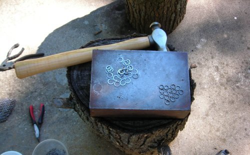

Work in Progress: Hammered Steel Coif
With this project, I'm aiming for some degree of authenticity. I chose mild steel for my material, as the only thing more authentic would be iron. I'm starting with round wire and forming the coils as usual, then cutting the rings with bolt cutters (more practical for armor than my cable cutters). Then, I haul the rings out to my makeshift anvil and hit them a few times with a 12-oz ball pein hammer. This does a few things for me. First of all, it makes them look more like the *really* authentic stuff, riveted rings, which were often flattened. Second, it makes the rings stronger, both by work-hardening the metal and by increasing the density of the weave. Third, it gives me some practice with hammering rings, in case I ever try riveting or even blacksmithing.It does add to the work load, though. Considerably.
Rings:
16 ga 1/4" IDMild steel
European 4:1 weave, with 45° seams
Update as of 8/28/2007
I'm still working on this every now and then. I've gotten loads better at hammering the rings -- see how much flatter they are toward the middle of the coif?If anyone's curious (and even if you aren't, really), here's a picture of my work station with its makeshift anvil:
